Enterprise Product Design
Bringing Positive Pay to Small Business Banking
RoleUX Lead
TimelineQ4 2026
Scope180+ screens
Teams3 Agile squads (Dev Leads, BAs, QAs, Scrum Masters), plus accessibility and content partners
Positive pay is a cheque-fraud control. A business submits a file of the cheques it has issued. When a cheque is presented for payment, the bank cross-references it against that file. If the details do not match, the cheque is raised as an exception and the client decides what happens to it: Pay, Pay & Issue, or Return.
Goal
Bring positive pay to the small-business platform. Clients had identified it as a significant missing capability. The service already existed on the corporate platform, so the work was not to invent it — it was to rebuild it for a different user on a modern platform.
Consideration
- The service existed on the corporate platform but could not be lifted across. The design language was years out of date and the user was different: on the small-business platform, positive pay would be run by owners, office managers, and bookkeepers — typically with two or three accounts entitled and no treasury function behind them.
- Delivery was split across three Agile squads — payments, user administration, and reporting — each owning a different piece of one continuous client journey. I was the only designer working across all three. This case study focuses on the payments squad: exceptions, issue files, voids, and managing issues and voids.
- Scope was not handed down. I defined it with the squads: what came across from the corporate platform, what was cut, and what was rebuilt.
- A fixed October release date, with no research budget and no user access. This was a parity-and-migration build. The evidence available was internal analytics, the corporate platform’s product owner, competitive analysis, and operations.
Outcome
Positive pay shipped on schedule in October 2026, delivered across all three squads. The exception slideout pattern created for the service also went live, and is now the pilot for adoption across the platform’s other payment rails.
The Process
Three squads delivering one service meant three places where it could quietly drift apart. I ran this same sequence — business scope through to QA — in all three, and repeating it was what kept the end-to-end experience coherent when the delivery structure wasn’t.

Current State Analysis
With access to the test environment and the live corporate product, I mapped its existing positive pay flows end to end — entitlement gates, approval states, validation rules, error paths, and edge cases. The map became the reference for conversations with developers and product owners about what to carry across, what to cut, and what to rebuild. Two changes came directly out of it: remove the exceptions summary, and change the approval structure for managing issues and voids.
Competitor Analysis
I then reviewed how five other banks handle manage exceptions: Chase, Bank of Hawaii, California Bank Trust, FM Bank, and Vectra Bank.
My own hypothesis for the exceptions table had been a left-to-right reading order — cheque details first, resolving into the decision at the far right. The review overturned it. Account number consistently came first, because filtering by account is how people approach the queue. Cheque number sat beside amount in every case, mirroring the layout of a physical cheque. I restructured the table around what I found rather than what I had reasoned my way to.
DESIGN DECISION 1 - The Slideout Problem
The constraint
The three decisions on an exception — Pay, Pay & Issue, Return — were inherited from the corporate platform, where they were housed behind a decisions dropdown. The small-business platform has its own global pattern: click a row in a table and a slideout opens with the record’s details and the actions available on it. That pattern assumed roughly binary actions. An exception carries three mutually exclusive decisions alongside download details, modify, and delete, and positive pay was the first service to put real pressure on it.
The workshop
I ran a workshop with two other designers. I set the context and the constraint, then each of us — myself included — had five minutes to sketch independently. We brought the sketches back, critiqued them together, and narrowed to three options.
Workshop board — exploration of slideout + solution options
Image unavailable
What shipped
Utility and destructive actions — download details, modify, delete — collapse into an ellipsis menu on the left. The three decisions sit on the right, all presented at equal weight.
Equal weight was deliberate. There is no safe default on a suspect cheque, and promoting one decision to primary would nudge clients toward paying or returning. The cutoff sharpens it: if nobody decides in time, the bank decides or the client’s configured default applies. Inaction already carries a consequence, so the interface has no business adding a thumb to the scale.
Exception details slideout
Image unavailable
Pay & issue confirmation
Image unavailable
The option that shipped was a merge of all three designers’ sketches, and it shipped unchanged from the workshop.
Design Decision #2 - Payee Name
Payee positive pay adds payee-name matching on top of cheque number and amount. Two things made it awkward. The corporate design displayed all four payee name slots at once even though the section is entirely optional. And whether the section is mandatory at all depends on the account selected — specifically, on whether that account has payee positive pay configured.
I proposed detecting this at account selection, so the form could resolve its own requirements the moment a client picked an account rather than presenting four fields of ambiguous status. It was ruled out on feasibility.
This is the decision I would revisit first. The current design asks clients to reason about a requirement the system already knows the answer to.
Add issued checks — step 1
Image unavailable
Payee details — one name
Image unavailable
Payee details — two names
Image unavailable
Design Decision #3 - What not to build
What not to build
The exceptions summary was cut. On the corporate platform it aggregates exception activity across a treasury team’s portfolio of accounts. Clients on the small-business platform have two or three accounts entitled on average, so the volume that makes a summary useful does not exist. Nothing replaced it. This was a proportionality judgment rather than a validated finding, and it is worth being clear about which of the two it was.
The approval structure for creating and managing issues and voids was also cut. Internal analytics showed only 1–2% of clients on the corporate platform had approvals configured, and the small-business segment was expected to be lower still. The stronger argument was operational: for the few who did configure it, an issue or void would sit in an approval queue — on a service where the work is time-sensitive and a queued item is a blocked one. Removing a control is a risk decision, and the product owners for both platforms aligned on it.
Barriers
An agile squad working against a waterfall team
File import was delivered by a separate team running waterfall while my squad ran agile. The two flows run in parallel and have to converge: the file import summary page exits to issues and voids, and the manual summary page exits to manage issues and voids. If those exit points did not land in the same place, a client doing the same job by two routes would end up somewhere different. Managing import maps raised the same question — where it lives, and how a client navigates to it.
I stayed close to the file import designers throughout, and we aligned on timelines and shared exit points. That extended to the DRS, where we had to confirm behaviour before the screens were technically dev-ready, because their delivery model needed the answer earlier than ours would have produced it.
Results And Impact
Positive pay shipped on schedule in October 2026 — 180+ screens across three Agile squads, delivered as one service.
The exception slideout pattern went into production with it, extending a pattern library I govern on top of the bank’s enterprise design system. Positive pay is the pilot: if it holds up, the pattern rolls out to the platform’s other payment rails.
The current state documentation outlived the project. It became the reference not only for my lead, but for services delivered after positive pay — reporting, stop payments, and cheque deposits.
Learnings
Documentation is the shared reference
With three squads building one service and a fourth team delivering file import on a different methodology, the current state map was the only thing everyone could point at. It took a significant share of the project, and it was worth it — the same documentation went on to support services delivered after positive pay.
Evidence beats reasoning
I had a defensible argument for the exceptions table: information left to right, resolving into the decision. Reviewing five other banks showed me clients filter by account number first, and that cheque number sits beside amount because that is how a cheque is laid out. My reasoning was sound and still wrong.
The best pattern came out of a room, not a file
The slideout structure that shipped was a merge of three designers’ five-minute sketches. I set the constraint and facilitated the critique rather than drawing the answer, and the result was better than what I had going in.
Web and Mobile Design
Acer Health Management Center
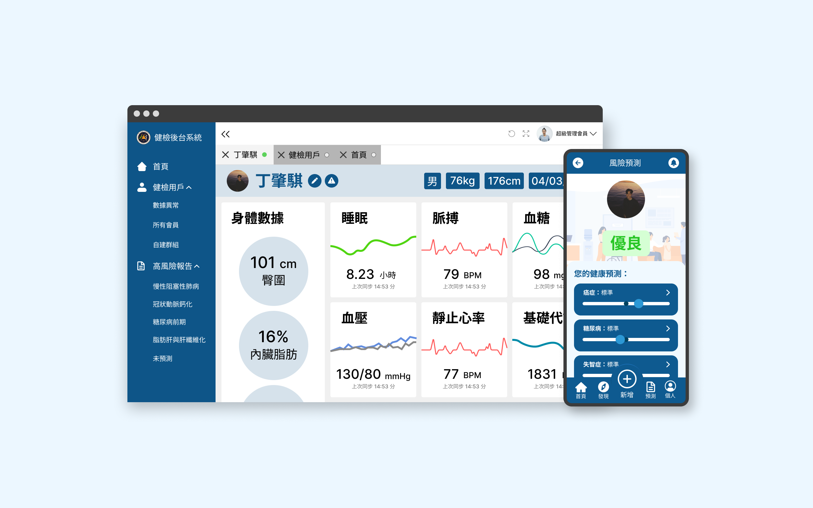
RoleLead UX Designer
TimelineSummer 2023
ToolsFigma
Attention Insight
Attention Insight
TeamEason Xing (PM)
Gene Wang (SWE)
Gene Wang (SWE)
At a glance
During the summer of 2023, I got the amazing chance to intern at Acer Inc. as a UX/UI Designer. While I was there, I was the sole UX designer for this project and responsible for the design direction of the POC.
This project is a collaboration between Acer and National Taiwan University Hospital (NTUH), the No. 1 Hospital in Taiwan, and our goal was to digitize and transform healthcare services in Taiwan.
Process
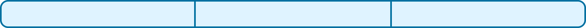
Conceptualization
User Flows
Information Architecture
Information Architecture
Design
Prototyping
Iteration
AI Testing
Final POC Design
Final POC Design
Impact
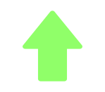
Increased satisfaction amongst stakeholders securing project development
Increased readability and accessibility of key patient information to doctors and nurses
Refined patient log-in user flows, reducing user confusion and providing seamless health data integration
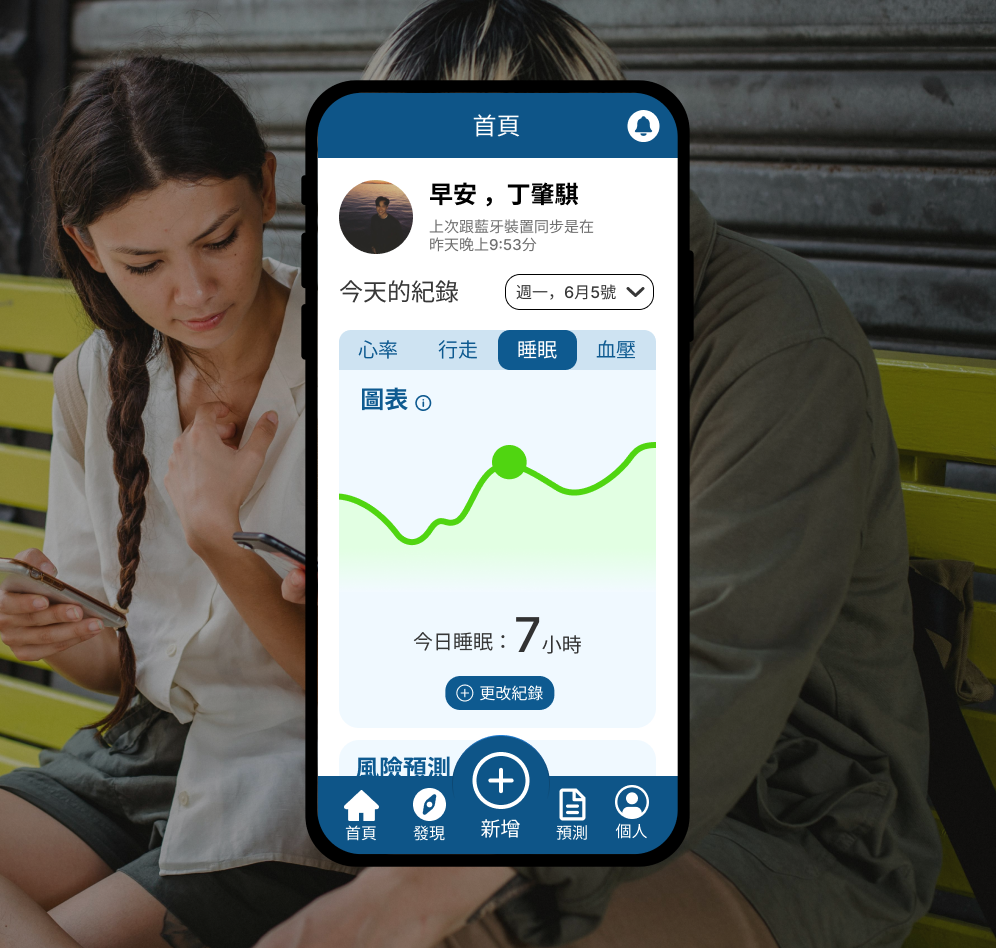
Context
In Taiwan, accessing personalized risk predictions and timely interventions often proves challenging for individuals. Simultaneously, healthcare institutions face hurdles in efficiently analyzing incoming data and delivering personalized care recommendations to patients.
For Acer and NTUH, they recognized this as an opportunity to bridge this gap. Our solution aimed to democratize access to predictive healthcare insights while streamlining the workflow for healthcare professionals.
Objective
01
Design a B2C mobile application aimed to provide users with the ability to conduct health risk predictions based on NTUH's risk prediction model
02
Design a B2B web application software that intakes data from the app and displays health information to the doctors at NTUH for analysis and diagnosis of health status
Conceptualize
Mobile
For the mobile aspect of this ecosystem, I first started with establishing a general user flow of what logging-in would look like. This was establish through repeated iterations and communication with business stakeholders.
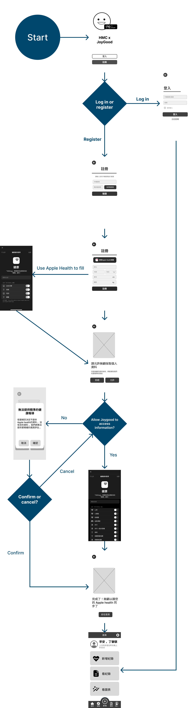
Web
For the web aspect of this ecosystem, not only was the visualization of information important to nail but also how the user actually access the information and whether or not the information hierarchy was intuitive. This was difficult due to the sheer amount of information there is but in the end we were able to reach a structure that made sense to our stakeholders.
 Open the full information architecture diagram ↗
Open the full information architecture diagram ↗
Open the full information architecture diagram ↗
Prototyping
Mobile
With the foundations laid out, I moved forward with creating the first set of wireframes and iterated from there.
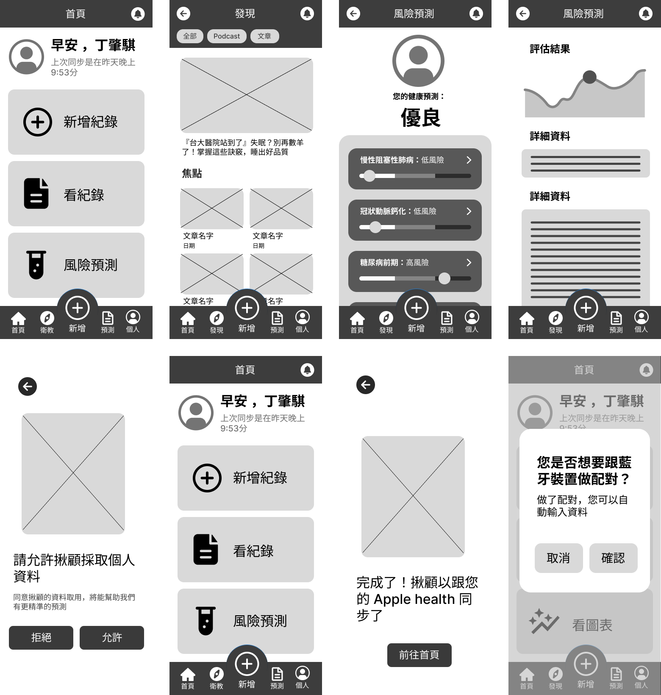
Web
As well as the web applications.
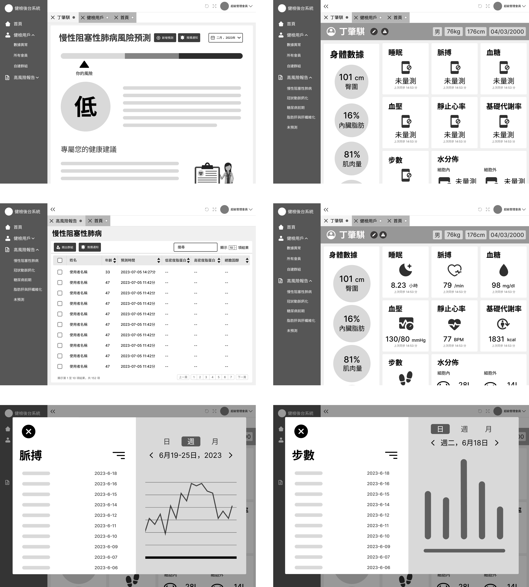
Iteration
After creating the first version of the prototypes the next step is to iterate on my designs... but how? As some other UX designers may have experienced before, sometimes it is very hard push PMs and executives to allocate time and effort to usability test.
How did I overcome this? I was able to utilize AI to help me identify hot spots where users would gravitate towards and some places they did not.
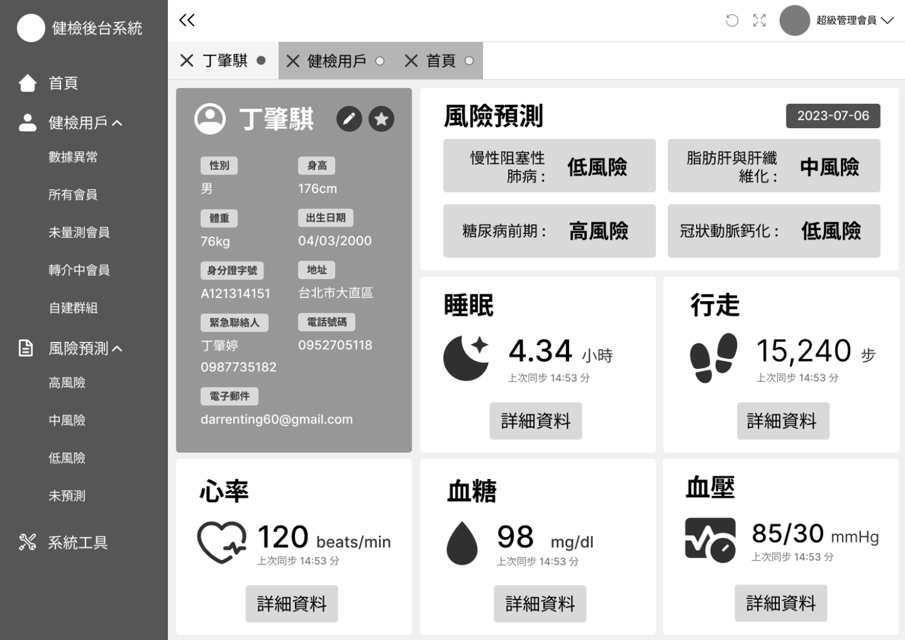
Optimal clarity = 58% (below average)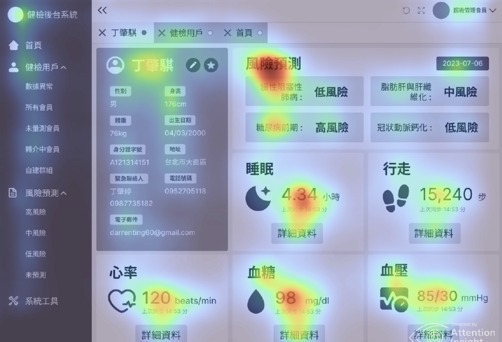
Results
While serving as a great tool to explain design rationale to stakeholders. Through this iterative process, I was able to get continuous feedback and improve my designs.
In the end, the results look something like this...
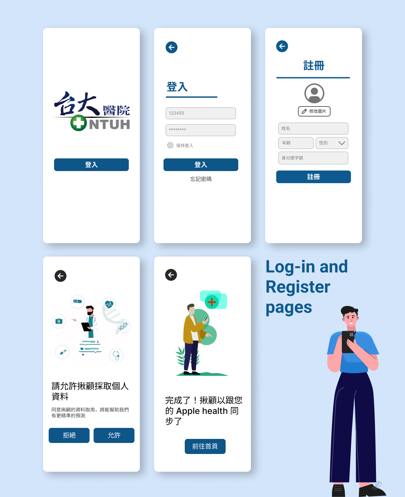
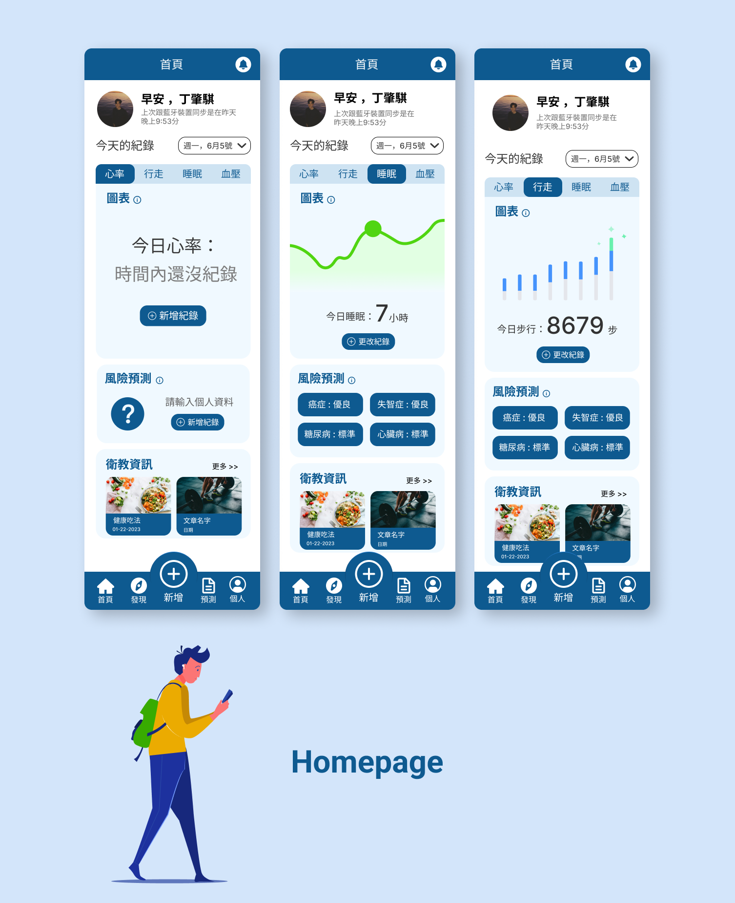
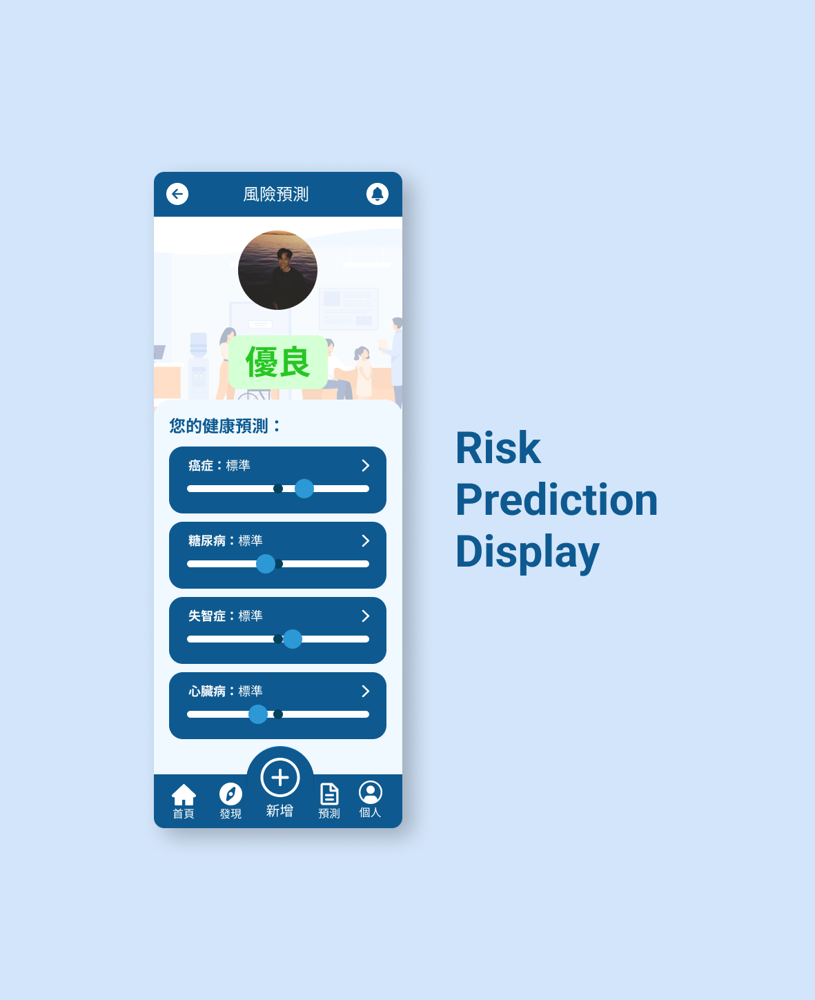
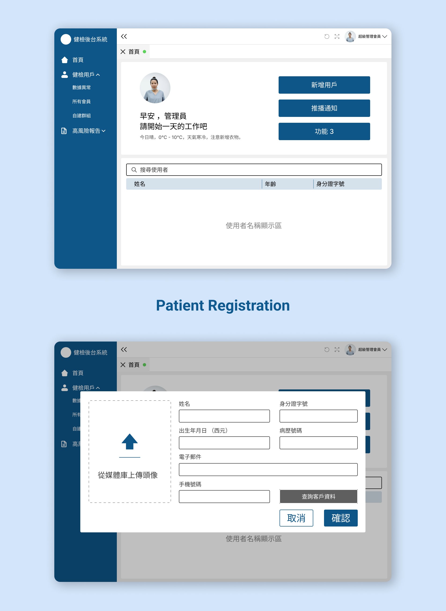
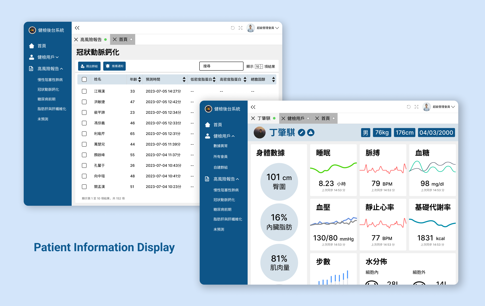
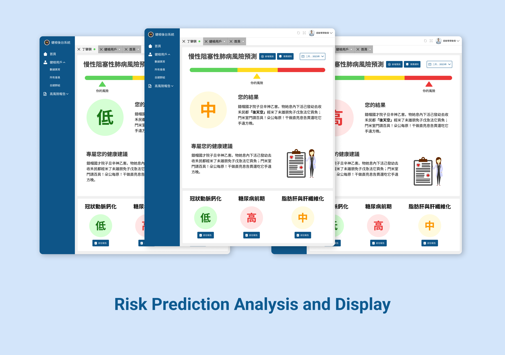
Takeaways
Coming from a background where most of my design skills came from an academic environment, it is very easy to go overboard and create something that is nearly impossible to implement. From working with developers and business stakeholders I've learned to create designs that balance feasibility and aesthetics.
Having the chance to work with both Acer and NTUH provided valuable exposure to interdisciplinary collaboration. This experience enhanced my ability to communicate effectively across different teams with varying expertise, fostering a more holistic approach to problem-solving.
When designing an ecosystem that includes both mobile and web applications, I learned that it is very important to fully understand who the users are and think about how the data is shared and visualized between the two systems.
I'll play first, and I'll tell you about it later. Maybe.
- MILES DAVIS
Hey, I'm Darren! Thanks for popping by.
I'm a designer that specializes in financial workflows for business clients, and when I'm not designing you can usually catch me training, playing guitar, or filming.
I'm a designer that specializes in financial workflows for business clients, and when I'm not designing you can usually catch me training, playing guitar, or filming.
Experience
Oct 2024 — Present
UX Designer
Bank of Montreal, Commercial Banking
Most senior designer on the SMB commercial banking platform, designing across six Agile squads covering payments, fraud prevention, account administration, and registration. I own the administration and entitlement experience, led the platform-wide integration of Positive Pay, and govern a 15+ pattern library extending BMO’s enterprise design system.
Sep 2023 — Apr 2024
UX Design Intern
Bank of Montreal, Technology & Operations
Designed internal tooling for BMO employees, including the platform behind Destination Digital, a bank-wide hackathon covering team registration, judging, and theme browsing. It stayed in active use for later cycles.
Jun — Aug 2023
UX Design Intern
Acer
Designed a proof-of-concept remote patient monitoring system spanning a patient mobile app and a clinician web portal, using predictive attention modelling to raise the predicted attention score on priority elements by 15%.
Jun — Jul 2021
UX Design Intern
OneAD
Ran a competitive analysis of live-streaming platforms, examining the engagement and retention mechanics behind streamer–audience interaction, and presented findings to the CEO.
2022 — 2024
Master of Information, UX Design
University of Toronto
Preceded by an Honours BA in Communication & Sociology at the University of Toronto, 2018–2022.
Web Design
UofT School of Graduate Studies
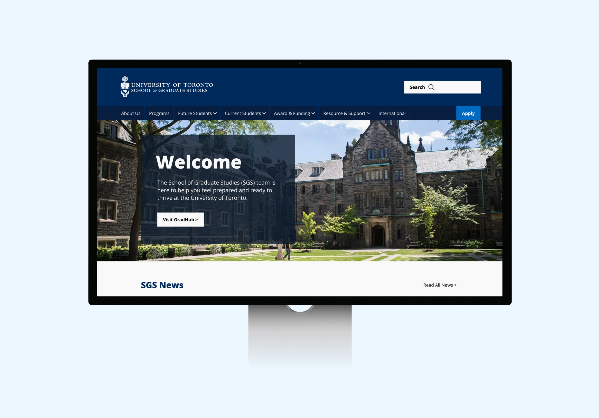
RoleProject Manager
UX Designer
UX Designer
TimelineWinter 2024 (4-Month)
ToolsFigma
Canva
Miro
Canva
Miro
TeamErica Lee (UXR)
Valerie Wu (UXD)
Colin Xiao (UXD/Client Contact)
Lu Liu (UXD)
Valerie Wu (UXD)
Colin Xiao (UXD/Client Contact)
Lu Liu (UXD)
At a glance
During winter 2024 I had the pleasure of working with the School of Graduate Studies and lead the redesigning efforts of the website. The University of Toronto’s School of Graduate Studies (SGS) website serves as a pivotal platform to provide comprehensive information and resources at every phase and aspect of the graduate learning journey.
This redesign project focuses on making improvements to the navigation design and most frequently sought-after user paths/flows, such as program applications for prospective students and writing support for current students and employees.
Process
Research
Questionnaires
Moderated Interview
Observation
Moderated Interview
Observation
Ideation
Brainstorming
Prototyping
Storyboarding
Prototyping
Storyboarding
Testing
Usability Testing
Feedback
Accessibility
Feedback
Accessibility
Impact
Increased average user satisfaction of website from 6.12/10 to 9.05/10
Reduced average search time for key resources by 86%
Eliminated content redundancies across crucial workflows, reducing user confusion and increasing clarity of information
Problem
Despite the university's reputation for excellence, its graduate studies website fails to meet users' needs due to design inconsistencies and content redundancy from multiple developer iterations. This results in poor information findability and inconsistent elements, significantly impacting the user experience for prospective students, current students, and staff.
Addressing these issues is crucial to align with SGS's mission of providing comprehensive information and enhancing the graduate school's reputation.
Alignment
Prior to starting our research it is crucial to understand first and foremost what are our client's objectives. We prioritized uncovering this during our first meeting with the clients.
Client Objective 1
To promote and support the work and supports offered by the SGS centres by ensuring their services are easy for students to find and they understand the benefits.
Client Objective 2
To support administrative staff and departments with the tools, messages and information they need to support their students.
Client Objective 3
To promote and support the communications needs and priorities of the Dean and Vice-Deans.
How might we improve the SGS website's navigation to ensure that it effectively meets its user groups' diverse needs by enhancing the findability of key application resources and educational support?
Research
In our research, we identified three primary user groups for the SGS website: prospective students, current students, and staff. Through 13 interviews, we discovered that current students often bypass the website, relying on direct emails or faculty-specific sites. As a result, we focused our redesign on addressing the shared needs of staff and prospective students, while considering current students as secondary users.
4 Prospective Students
4 Staff
5 Current Students
1. Questionnaires
Survey capturing background and demographic information such as student status, faculty, etc...
2. Moderated Interview
15-30 min. interview session consisting of questions uncovering their main goals on the site, their experience, and any frustrations they experienced.
3. Observation
Participants were given two different tasks based on which user group they belong to:
Students - Find the program requirements for your program, and find out how to apply.
Current Students and Staff - Can you find the writing support contact for grad students?
Students - Find the program requirements for your program, and find out how to apply.
Current Students and Staff - Can you find the writing support contact for grad students?
Affinity Diagram
Following the research conducted, our next steps were to categorize the information and consolidate the main themes identified into artifacts such as personas and as-is scenarios. Not only was this useful for us in determining our scope, this was also extremely helpful in communicating with our client.
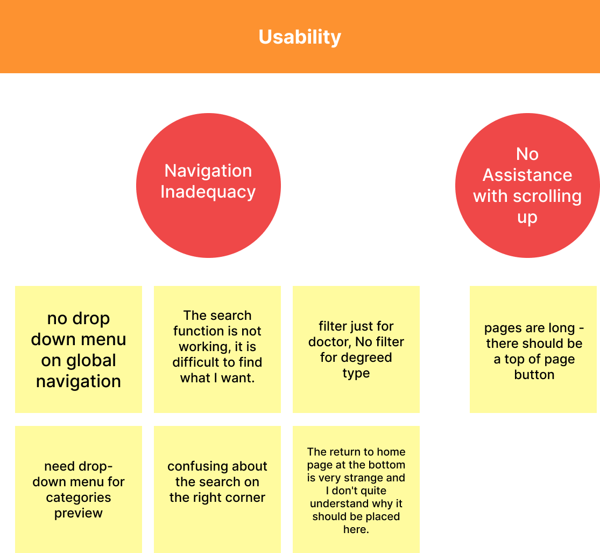
Theme → Pain-point → User Quotes
Prioritization Grid
Due to the strict 4-month timeframe of this project and the sheer size of the website, we needed a way to prioritize all the identified these and polish our focus and scope. We utilized a prioritization grid to plot all of our identified themes based on feasibility and impact.
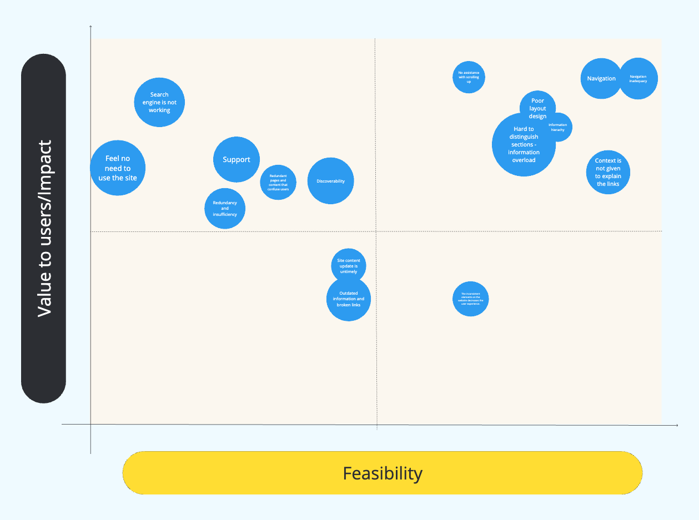
Through this process of categorizing and prioritizing, we were able to identify five main pain points for our users...
Pain Point 1
Poor information hierarchy and organization of informatio
Pain Point 2
No assistance when scrolling up large amounts of content
Pain Point 3
Sections within web pages are hard to distinguish and navigate through
Pain Point 4
Information overload due to overwhelming amount of information and poor layout design
Pain Point 5
Links, headings, buttons, and menu items lack context which confuses users
Personas
From our identified themes, we wanted to create two personas that embodied the frustrations of both students and staff at UofT. Incorporating insights from our interview, survey, and pain points, our personas allowed for a more focused and effective redesign of our ideal user.
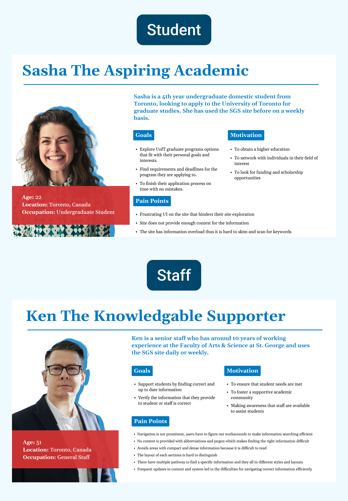
As-Is Scenario
Alongside our personas, we created As-Is scenarios capturing what our users are doing, feeling, thinking, and the pain points their experiencing throughout their user journey of the SGS Site. This highlighted for us what steps of the user flow are going wrong, which in turn increased our focus and efficiency on problem solving.
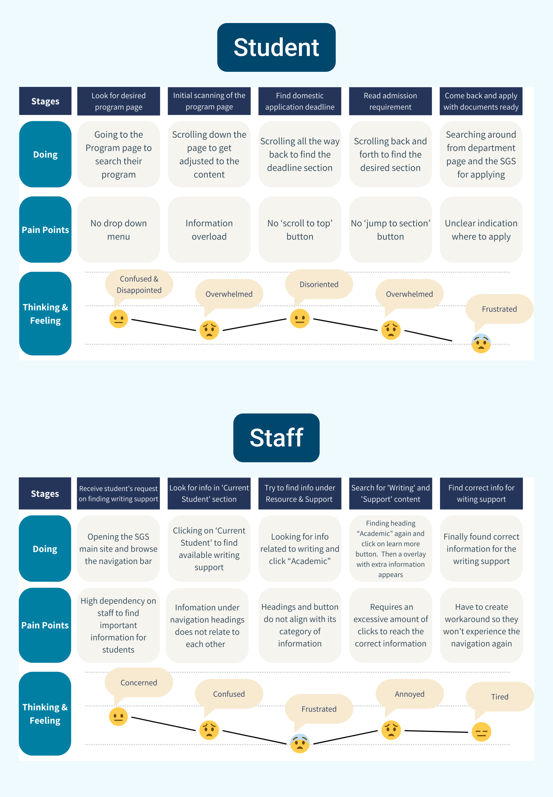
Ideation
Brainstorming
For ideation, we needed to start brainstorming solutions for the problems identified in our research and thanks to the prioritization grid created previously we had a good sense of issues to focus on.
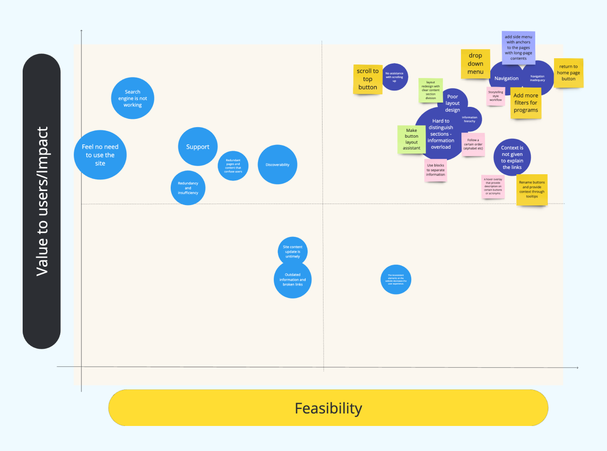
Here are the solutions we felt were "No Brainers" based on its impact and feasibility...
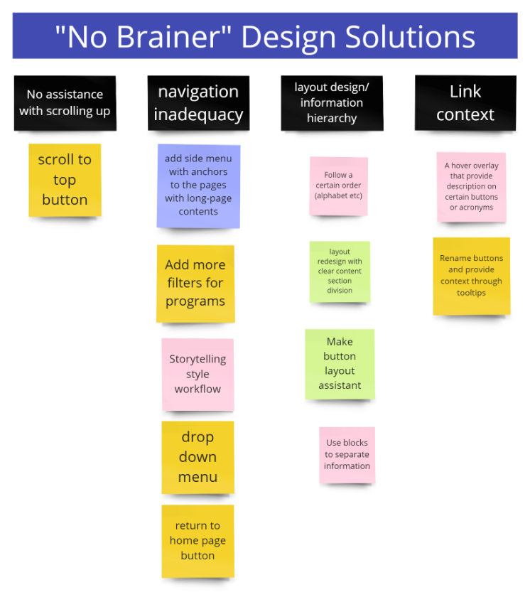
Mid-Fidelity
For our medium-fidelity designs we wanted to make sure we nailed our user needs identified in our research and bring some of our "No Brainer" solution to life. Below are some of the designs we came up with:
Figma File ↗
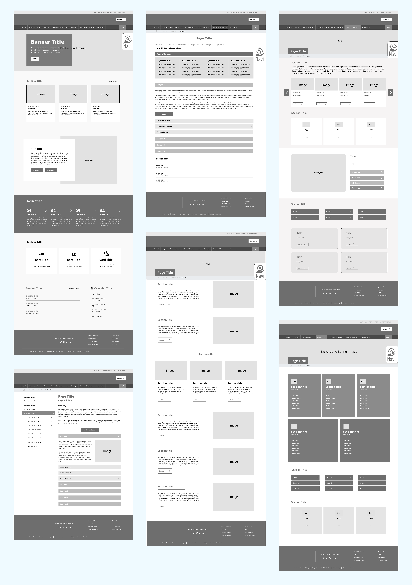
High-Fidelity
In the High-Fidelity Prototype stage, we meticulously translated our mid-fidelity designs into polished, visually compelling interfaces. This phase emphasized precise visual details, advanced interactive elements, and seamless user experiences. The high-fidelity prototype served as a near-final representation, allowing stakeholders to visualize the end product with clarity and confidence.
Figma File ↗
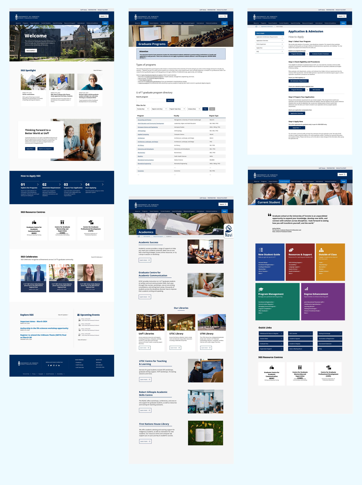
Storyboarding
Following our high-fidelity prototypes, we created storyboards to contextualize our designs. This not only helped in communicating with our clients but also served as a point of comparison with our as-is scenario. Below is a brief summary of the user flow, for the full walkthrough please click the Figma link below.
Full Storyboard Walkthrough ↗
Final Design
Usability Testing
With our prototypes done, we moved towards usability testing. This iterative process ensured that the final design was both intuitive and effective, meeting the high standards required for the SGS website.
Major Improvements
Thanks to our participants, we were able to uncover some flaws in our design and iterate on those. Here are some of the major changes...
Final Design ↗
Prioritizing support over marketing
Removing marketing material such as quotes and replacing them with resources such as news report carousels
Polishing workflows
Removing unnecessary tutorials on program applications, allowing users to be taken straight to application page straight from program information page.
White space management
We felt like the side-menu on the program information page allowed for a lot of unused white space, so we explored other designs and layout to figure out how to better utilize it.
Accessibility Considerations
Colour contrast fulfills WCAG AAA Requirements
Line spacing is at least space-and-a-half within paragraphs, and paragraph spacing is at least 1.5 times larger than the line spacing
The purpose of each link can be determined from the link text alone or from the link text together
Proper headings and clear/concise content in the pages for optimized screen reader capabilities
Reflection
Take-aways
Learning the importance of efficient project management as it ensured smooth team coordination, timely completion, and effective communication throughout the project
Having design artifacts and utilizing them as a tool for communication with clients
Taking the proper time and due diligence to really understand the wants and needs of your client is crucial
Next Steps
Conduct second round of user-testing of final design
Expand design decisions and improvements to other areas of the site
Hand-off to development team at SGS for implementation
{{ typedText }}